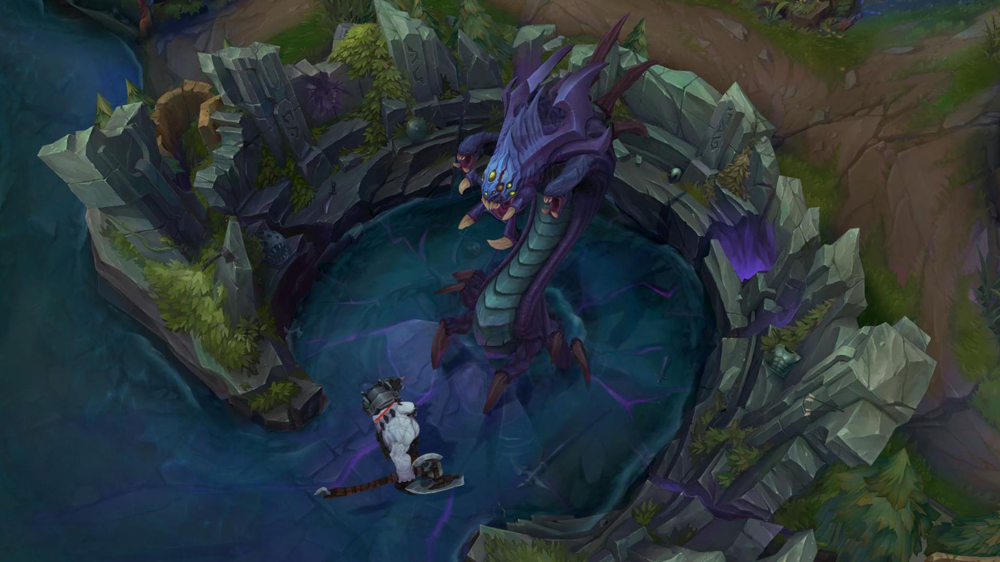

|
A játékos regisztráció után az úgynevezett láthatatlan "Idéző" szerepébe bújik, aki egy egyedülálló mágikus képességekkel rendelkező hőst tud irányítani akinek célja, hogy csapattársai segítségével legyőzze az ellenfél csapatot. A három különböző pályán a játékosok két egyenlő, 3 illetve 5 fős csapatokra oszlanak, mindenki egy általa vagy véletlenszerűen választott hőst irányítva. A csapatok a térkép két átellenes pontján kezdenek egy Érkező Medence (Spawn Pool) nevű helyen, a Nexus (főközpont, szó szerint: összeköttetés) mellett. Az ellenfél Nexusának elpusztításával lehet megnyerni a játékot, vagy ha az ellenfél csapata feladja.
A hősök a játék során folyamatosan tapasztalatot és aranyat gyűjtenek, ellenséges lények (hősök és minionok) illetve semleges szörnyetegek legyilkolásával, valamint tornyok és inhibitorok lerombolásával. Az aranyból különféle tárgyakat vehetnek, amelyek fokozzák a hatékonyságukat, képességeik erejét, vagy éppen védelmet adnak. Első szinten kezdenek és a 18. szintig fejlődhetnek minden játék alkalmával, míg az Idézői szint, folyamatosan növekszik.
Az Igazság mezeje
Jelenleg 2 állandó játékmód létezik a játékban , mely 2 különböző térképen zajlik. (játékbeli nevük Field of Justice, azaz Igazság Mezeje):
Idézők Szurdoka: a klasszikus pálya, melyen három ösvény (top-felső, mid-középső és bot-alsó) van, ezeket a dzsungel választja el egymástól. Két 5 fős csapat küzd egymás ellen, hogy a másik csapat Nexusát lerombolják, vagy feladásra kényszerítsék őket. Ezen a térképen található Baron Nashor, a Szurdok Hírnöke, valamint a Sárkány.
Ordító Szakadék: a 2013 április végén megjelent (Aram) térkép egy hidat foglal magába, azaz egyetlen úttal rendelkezik, ahol a játékosok véletlenszerűen kisorsolt hőssel játszhatnak, szintén 5 vs 5. Ha nem azzal a hőssel szeretnének játszani 2 újrapörgetési, azaz reroll lehetőségük van, ekkor egy új, szintén véletlenszerűen kisorsolt hőst kapnak. Ezt a lehetőséget az Ordító Szakadékon játszott mérkőzésekkel lehet szerezni. A másik lehetőségük a játékosoknak, hogy cserélnek csapattársukkal, amennyiben meg van mindkettőjüknek ugyanaz a hős, és a kért játékos is beleegyezik a cserébe. Elődje a Proving Grounds pálya volt, melyen szintén hídon folytak a harcok, így szintén egy útvonallal rendelkezett, csak más kinézettel. Maradványai még mindig láthatóak a térkép „tetején”.

A Baron Nashor mérete egy hőshöz viszonyítva
A hősök
Jelenleg 154 hős áll rendelkezésre, melyek közül a legutóbbi Vex. A hősök a játék világában olyan nagy hatalmú egyének, különbözőféle hatalmi forrásokkal, akiket/amiket az Idéző (a játékos) idéz meg és irányít. Ezek a hősök egyedi képességekkel és játékstílussal rendelkeznek, de beoszthatók 6 kategóriába:
1. Orgyilkos: középszintű támadó- és védekezőképességgel rendelkeznek. Lényegük az, hogy magas prioritású, alacsony életerejű célpontokat gyorsan tudjanak megsemmisíteni. Általában van valamilyen "utazó" képességük, mellyel gyorsan tudnak helyet változtatni, akár támadás, akár menekülés céljából. Könnyen végeznek a Támogató, Mágus és Lövész karakterekkel.
2. Harcos (vagy Off-Tank): erős támadóerővel és védekezéssel rendelkeznek, viszont általában lassúak. A Harcosok alapértékei igen magasak, ezért a játék elején kulcsfontosságú a szerepük. A játék végében viszont érdemesebb, úgymond "rásegítésre" vagy védekezésre használni őket. A Harcosok bármilyen szerepet fölvehetnek.
3. Mágus: főleg távolsági karakterek, nagyon erős támadóerővel, de nagyon gyenge védekezéssel és alaptámadással. Céljuk, hogy távolról és területre, vagy több játékosra sebezzen. Gyakran CC-vel (crowd control effect) rendelkeznek, melyek rövid távon negatív hatással vannak az ellenfél küzdőképességére. Ezekkel irányítható a játék menete is. Érdemes velük a háttérből irányítani, mivel erejük miatt magas szintű célpontok és gyorsan megölhetők.
4. Lövész (vagy ADC vagy Carry): távolsági karakterek, melyeknek alaptámadása gyors és erős. Leggyakrabban rendelkeznek olyan képességekkel, amikkel saját értékeiket (támadási sebesség, mozgási sebesség stb.) erősíteni, növelni tudják. Mivel ők képesek kiosztani a legnagyobb sebzést a legrövidebb idő alatt, ezért kulcsfontosságú karakterek, mind a saját, mind az ellenfél csapat számára. A játék elején és közepén folyamatos támogatásra szorulnak, így nem érdemes egyedül menni egy Lövész karakterrel.
5. Támogató: gyenge támadó- és védekező képességű karakterek. Céljuk, a csapattársak támogatása, gyógyítással, buffolással, előnyös helyzetek teremtésével vagy éppen a támadási lehetőségek elkerülésével. A Támogató nem öli meg a minionokat, de megfelelő eszközzel, vagy Mesterségekkel megfelelő mennyiségű aranyat gyűjthet a fejlődéshez.
6. Tank: extrém védekezőképességgel és viszonylag gyenge támadással rendelkeznek és minden Tank rendelkezik valamilyen tömegirányító hatással. Lényegük, hogy megvédjék a gyengébb karaktereket, fölfogják a támadásokat, így előnyhöz juttatva saját csapatát. Nem ritka, hogy a Tank (akár a Támogató) teljesen föláldozza magát, amíg a csapattársak megölik a fontos ellenfeleket.
Erőforrások
A játék jelenleg többféle erőforrást tartalmaz, valamint különféle módszereket a képességhasználat korlátozására. Egy hős maximum egy erőforrással rendelkezik.
Mana: a legáltalánosabb erőforrás, a legtöbb hős manát (mágikus energiát) használ a képességeihez. A maximális értéke és a visszatöltődés sebessége is növekszik szintlépéskor, illetve tárgyakkal vagy fogyaszthatókkal is fokozható. A játékban kék színnel jelölik.
Energia: négy nindzsa (Akali, Kennen, Shen, Zed) és egy szerzetes által (Lee Sin) használt erőforrás. Jellemzője, hogy a maximális alapértéke rögzített (200), valamint a visszatöltődés sebessége is kevésbé befolyásolható, viszont alapvetően gyors. Ez azt eredményezi, hogy az erőforrás a manával ellentétben hosszú távon nem fogy el, viszont rövidtávon a képességek túlzott használatával könnyen kimerülhet.És amiért újradolgoztak pár rúnát ezért a maximum energia 250-re lehet húzni.
Düh/Vadság: ez az erőforrás nulláról indul, nagyrészt alaptámadásokkal növekszik, és a képességek használatát erősíti, és röviddel a harc befejezése után folyamatosan fogy. Maximum értéke 100, illetve 5. Jelenleg 5 hős, Tryndamere, Renekton, Shyvana, Gnar és Rek'Sai használja a Dühöt képességeik erősítésére, míg Rengar a Vadságot használja fel erőforrásként. A Düh piros, a Vadság narancssárga színnel van jelölve.
Hő: jelenleg egy hős használja, (Rumble) a mechanikus gépezetének a túlmelegedését mérve ezzel. Minden képességhasználattal növekszik, bizonyos határ felett erősíti a képességeit, valamint ha eléri a maximumot akkor a túlmelegedett gép kihűlésig nem tud több képességet használni. Képességhasználat nélkül folyamatosan hűl a gép, fogyasztva az erőforrást.
|